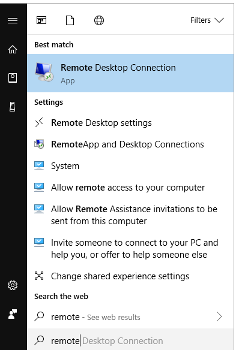

Chapter 2 Folder Strcuture
This short note provides everything you need to understand the new folder structure of the PovcalNet workflow, which is suggested with the following objectives in mind:
Objectives
- Share documents (i.e, editable files) among the team members through a stable, friendly, and vintage-control suitable platform.
- Store vintages of data for replicability purposes
- Execute, load, and save data uninterruptedly and, if possible, in a fast manner.
Unfortunately, the World Bank systems do not provide an ITS service that allows us to meet all the objectives, and thus we are forced to use different platforms. OneDrive for the first objective, a Network drive for the second one, and server (super computer) of remote execution for the third one.
2.1 OneDrive
OneDrive has a double storage functionality. On the one hand, each person has been granted with 5TB of memory in a personal folder that is accessible through either the web browser or through the Window Explorer.
On the other hand, OneDrive offers shared libraries for collaboration among the members of a private team. The PovcalNet team currently has assigned the library called PovcalNet Data, Systems and Management and it is accessible either through the web browser or through the Microsoft Teams app. In general, the shared library in OneDrive works in the same way as the personal OneDrive folder with the exception that MS Teams automatically creates a folder in the root of the library for each new channel that is added to team. Besides this inconvenience, the suggested folder structure is as follows
## levelName
## 1 wbntpcifs
## 2 °--PovcalNet
## 3 °--TestFolder
## 4 ¦--01.admin
## 5 ¦ ¦--01.Recruitment
## 6 ¦ ¦--02.Funding
## 7 ¦ °--03.Concept_note
## 8 ¦--02.core_team
## 9 ¦ ¦--01.code
## 10 ¦ ¦ ¦--01.packages
## 11 ¦ ¦ ¦ ¦--01.Stata
## 12 ¦ ¦ ¦ ¦--02.R
## 13 ¦ ¦ ¦ ¦--03.Python
## 14 ¦ ¦ ¦ °--04.VB
## 15 ¦ ¦ °--02.routines
## 16 ¦ ¦--02.dashboard
## 17 ¦ ¦--03.PPT
## 18 ¦ °--04.Minutes
## 19 °--03.projects
## 20 ¦--01.Metadata
## 21 ¦ ¦--01.CPI
## 22 ¦ ¦--02.PPP
## 23 ¦ ¦--03.National_accounts
## 24 ¦ °--04.Population
## 25 ¦--02.Nowcasting_error
## 26 ¦ ¦--_aux
## 27 ¦ ¦--01.Data
## 28 ¦ ¦--02.Code
## 29 ¦ ¦--03.Results
## 30 ¦ ¦--04.Writeup
## 31 ¦ °--05.Literature
## 32 ¦--03.The_Real_Value_of_Poverty
## 33 ¦ ¦--_aux
## 34 ¦ ¦--01.Data
## 35 ¦ ¦--02.Code
## 36 ¦ ¦--03.Results
## 37 ¦ ¦--04.Writeup
## 38 ¦ °--05.Literature
## 39 ¦--04.Whats_New_notes
## 40 ¦ ¦--_aux
## 41 ¦ ¦--01.Data
## 42 ¦ ¦--02.Code
## 43 ¦ ¦--03.Results
## 44 ¦ ¦--04.Writeup
## 45 ¦ °--05.Literature
## 46 °--05.Project_X
## 47 ¦--_aux
## 48 ¦--01.Data
## 49 ¦--02.Code
## 50 ¦--03.Results
## 51 ¦--04.Writeup
## 52 °--05.LiteratureIn general, the folder structure is divided by topics according to their functionality. 01.admin, 02.core_team, and 03.projects. Notice that up to the third level in the folder structure, all folders are prefixed with two-digit numbers. This system guarantees that folders will be sorted as they are added and it is useful for navigation when using the keyboard. Also notice that there are no blank spaces in folders names, but rather underscores (_) are used when the name of the folder has two or more words. This is to avoid problems with some systems.
01.adminThis folder contains everything related to administrative information. Each subfolder corresponds to a big subtopic such as recruitment, funding, or concept notes.02.core_teamThis folder contains information that is common and useful to all the members of the team and intersects two or more functions (or projects). For instance, theStataandRpackages to query the PovcalNet API might be used in many different projects and do not belong to any project besides the production of the packages itself. Thus, four main categories of common information have been added: code, dashboard, PPT, and minutes.03.projectsThis folder contains all the analytic projects in which the PovcalNet team participates. By default, each project contains six subfolders,/01.data,/02.Code,/03.results,/04.writeup,/05.Literature, and/_aux, but these structure could be modified by following any of the following examples: example1, example2, or my favorite.
2.2 Network Drive
The Network drive would be mainly used to archive data. Currently, it is known as the P drive, but it could be disconnected and remapped by following the steps below.
This drive has many folders in its root, but under the new folder structure only two folder would take predominance, 01.Povcalnet and 02.personal.
01.povcalnethas four main subfulders and follow the structure below:## levelName ## 1 wbntpcifs ## 2 °--PovcalNet ## 3 °--01.PovcalNet ## 4 ¦--00.Master ## 5 ¦ ¦--01.current ## 6 ¦ ¦ °--01.to_upload ## 7 ¦ °--02.vintage ## 8 ¦--01.QA ## 9 ¦--02.Vintage_control ## 10 °--03.Production ## 11 ¦--01.dta ## 12 ¦--02.text ## 13 °--03.pcb/00.Mastercontains everything related to the master.xlsx file that is uploaded into the PovcalNet system. This file has its own way for proper use and requires a separate explanation./01.QAis a working folder that is getting constantly modified./02.Vintage_controlcontains the historical data of PovcalNet. Eventually, this would be folder accessible throughdatalibweb./03.Productionis the folder with the current version of the data in the PovcalNet system.
02.personalcontains one folder for each member of the team. The name of the folder is the UPI of the user preceded by the the letters ‘wb’.
## levelName
## 1 wbntpcifs
## 2 °--PovcalNet
## 3 °--02.personal
## 4 ¦--wb020687
## 5 ¦--wb108988
## 6 ¦--wb372541
## 7 ¦--wb384996
## 8 ¦--wb424681
## 9 ¦--wb499754
## 10 °--wb5485422.2.0.1 Steps to map drives
In these steps, we disconnect any mapped drive that has previously assigned to letters P, N, or D. Then, we assign to letter D the former P network drive and to letter D the high-speed drive in the server.
- Open Notepad.
- Copy and paste the following lines:
net use /del E: /Y
net use E: \\wbgmsddg001\PovcalNet /PERSISTENT:YES- Save it in your desktop as
link_drives.bat - Close Notepad
- Double click file
link_drives.batin your desktop.
2.3 Remote server connection
The server is a ‘super computer’ with 8 processor and 64GB of RAM memory. All the
2.3.0.1 Steps to connect to the server
In order to get access to the remote server, please do the following:
- Click on Start, type ‘remote’, and click on “Remote Desktop Connection”

- Type
WBGMSDDG001in the field ‘Computer:’ and click on ‘show options’ - Make sure the box ‘Always ask for credentials’ is unchecked

- Click tab ‘Local Resources’ and make sure boxes ‘Printers’ and ‘Clipboard’ are checked. Then click ‘More…’

- Make sure that only boxes ‘(C:)OSDisk’ and ‘Drives that I plug in later’ are checked and then click OK.
- click connect.
- Enter your username (i.e., wbXXXXXX) and Windows passphrase, where XXXXXX is your UPI number.
- Once your in the server, enter again your username and Windows passphrase.

You need to execute steps 2 to 7 only once. Next time you login into the server you only need to execute steps 1 and 8.
2.3.0.2 Map Network drive in the server
Once you’re in the server, open Window Explorer and go to the path D:\PovcalNet\02.core_team\_aux\ in which you will see a file called link_NDrive.bat. Double click that file in order to map the PovcalNet network drive in the server. This procedure has to be done only once. After that, the network drive will be always mapped in the server for you.
2.4 Additional topics to discuss
2.4.1 R or Stata or both?
2.4.2 GitHub
ss